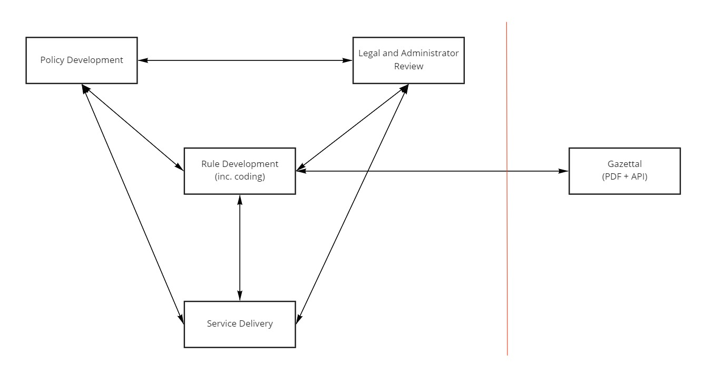

Rules as Code
What it means, and why we're doing it
Sara Falamaki and Asghar Kazi (You probably need to change this intro slide! - L)
What are we doing?
- Manually translating prescriptive rules into computer code
- Publishing this translation, so computer systems can use it
- Testing our interpretation of the rules with clear, reproducible test data
Why Code The Rules?
Every computer system that interacts with rules, codes them
Lets do it once
So that everyone uses the same rules
Often the interaction between rules is incomprehensible to mere humans...

And when rules change, it becomes even more confusing!
Let's do rules better
- By explaining our rules to a stupid computer, we can help ensure they make sense
- Rules and computer systems become easier to integrate with, test, and modify
- By reducing the burden of legislation, we improve our customer's experience
We promise to
- Make life better
- Save Money!
- Save Effort
- Help make better rules
... for both our customers and staff
What are we NOT doing?
AI
Machine Learning
Law, equity, judgements
RoboCops
RoboJudges
RoboDebt
Automatic Anything
... Anything scary!
Rules as Code is here TODAY
TJ - This is your section to shine!
- Senegal's Taxation System - entire system coded in 36 hour hackathon
- Etax - prefilling, different UI for individuals and agents, etc
- ESS - NABERS
One ruleset
... many different representations
- Web form
- 3rd Party app
- Voice reader interface
- System integration with 3rd party system (MYOB, XERO, etc)
- etc ..
Commbank's Benefits Search

Commbank's Benefits Search
How does doing Rules as Code work?
- Choose legislation to translate, or co-author new legislation
- Concept Modelling
- Code Concepts
- Test understanding and code with test scenarios
- Review the code with legal experts
- Deploy API, and integrate services with it
Let's use the example of the Energy Savings Scheme to explain how this process works.
What is the Energy Savings Scheme?
In a sentence, the Energy Savings Scheme (Scheme) provides financial incentives to create energy savings, through conducting energy savings activities.
The aim of the Scheme is to encourage investment in energy efficiency, lower energy usage and lower energy costs, across households, business and industry.
The Scheme is coordinated by DPIE and administered by the Independent Pricing and Regulatory Tribunal (IPART), who sit within DCS.
A simplified flow of how the Scheme works
Success of the Scheme to date
Since the beginning of the Scheme in July 2009, it has achieved:
28,000 GWh of energy savings (through to 2028)
$6.2 billion in energy bill savings (through to 2028)
29 million Energy Savings Certificates (since 2009)
Statistics current to 26 May 2020.
In context of NSW's overall energy savings targets...
The ESS and Rules
The activities eligible for ESS incentives are defined within the Energy Savings Scheme Rule (ESS Rule).
DPIE updates the Rule approximately yearly, to continue incentivising better than best practice.
A quick view of how the Rule has evolved over time.
The future of the ESS
The Energy Security Safeguard (Safeguard) was announced in late 2019, with two major components:
An expansion of the existing efficiency Scheme, with increased energy savings targets
The introduction of a new demand reduction scheme, with a new Rule for incentivising demand reduction activities
Read more about the Safeguard in the NSW Electricity Strategy.
In summary
The Scheme incentivises energy savings activities which improve energy efficiency
It makes significant contributions to NSW's energy savings targets
There's a lengthy, complex Rule which defines what's eligible for incentives
The new Safeguard is going to expand the scope of the Scheme
Continuing current Scheme delivery makes it difficult for us to achieve our new targets - which means we need to make it easier to access the Scheme
Reducing the complexity involved with the Rules, and enabling digital delivery of the Rules eases access to the Scheme!
What we've done so far is...
Worked with DCS to learn how to build a Rules as Code coding environment.
Coded the NABERS method of the Rule (for Offices and Apartments).
Built test cases for the use of this method.
Reviewed the code with Legal.
Started the process of building a proof of concept webform.
Started planning the next sections of the ESS to code.
A simple example of the value of our current work.
There's a term "Counted Energy Savings" in the NABERS method of the ESS.
It appears twice - and it's defined slightly differently both times it appears.
The difference in meanings is summarised below.

Strictly following the existing definitions of Counted Energy Savings within the Rule, it would be impossible to calculate ESCs within NABERS because of this ambiguity - the machine would be unsure of what definition to use at this point of the calculation, and refuse to finish it.
Months and Dates
Months and 4.5 year old children - TJ, this is for you to put whatever your heart wants to :)
Learning things
Months and 4.5 year old children
What's so special about months?
A month is a common concept that appears everywhere.
It appears in the ESS a few times, such as in 8.8.8:

But what exactly is a month?
Let's see what the law says.
This is the definition of months in the Interpretations Act.
The legal interpretation of this definition.
So for (a),
a month begins on 12:00:01am on 15 July, and ends on 11:59:59pm on 14 August. Next month begins at 12:00:01am on 15 August, etc.
For (b),
a month begins on 12:00:01am on 31 August, and ends on 11:59:59pm on 30 September. Next month begins at 12:00:01am on 1 October, ends 11:59:59pm on 31 October, etc.
This functionality is difficult to replicate in code.
What we did with this information.
We built a function to replicate this definition.
There's an interesting finding we found, in codifying the strict legal interpretation of a common term and applying test cases to it.
Here's a test case that looks at 8.8.8, specifically at leap years.
The immediate value here is making the rule stronger, through removing ambiguity, finding loopholes and then building a rule development process around Rules as Code.
Better Rules
Because we've got increasing targets, a second new Rule coming into effect and significant existing complexity which could scale into unworkable complexity, we're integrating Rules as Code into our rule development processes.
The Better Rules framework provides a template for how we can do rule changes
and
Coding the rules will transform how the rules operate and are implemented.
The current rule change process is very linear.
Here's a simplified version of the current process.

The end goal is to use an integrated Better Rules approach to build a better end product.
There's three keys to building Better Rules for the ESS:
- integrating the perspectives and knowledge of different experts, such as legal experts, subject matter experts and digital specialists
- engaging in a process of continuous iteration - prototyping Better Rules approaches and learning from development
- designing rules with digital service delivery, and strong outcomes for the user in mind
ESS example UX and code
BRD example UX and code
Good Candidates for RaC
Are rules/regulations/policies that:
- Are used by other organisations, agencies or partners
- Change frequently or programmatically
- Create the most queries from customers
- Are about to be drafted